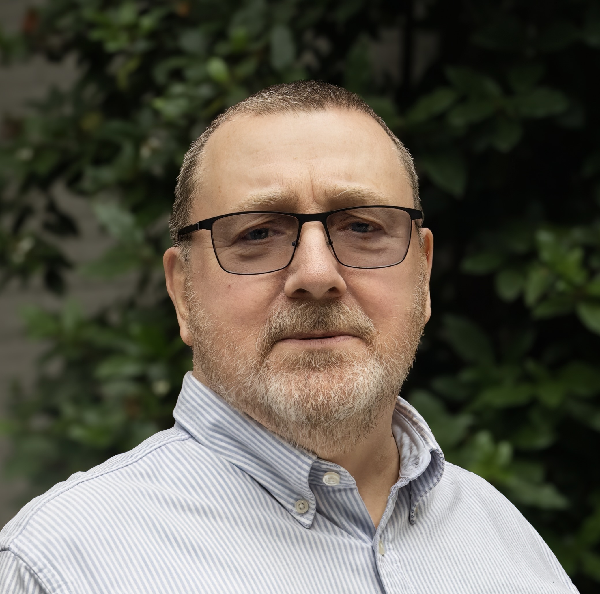

Program Notes
Umbrae
Program Note
"Umbrae" ("Shadows") is a reflection on the fragmented nature of human memory, triggered by distorted shadows of encountered sounds, words and spaces. A half-forgotten poem escaping translation; disembodied scraps of a musical phrases erroneously remembered, filled a soundscape of corroded memories.
The composition process reflected this experience. It was based on processes breaking, semi-musical phrases being interrupted halfway through their development, as if human memory suddenly failed. Fragmented scraps of various recording sessions were brought together in unexpected and paradoxical ways, bringing memories of unique and non-replicable moments. The fragmentation was achieved mainly through a decomposition and asynchronous processing of various parts of the Ambisonic soundfield, by applying small variations to different parts of the soundfield, in order to achieve a "shattered glass" effect.
"Umbrae" was realized at the University of Washington's Digital Arts and Experimental Media (DXARTS) and premiered at the Ars Electronica Festival in Linz in 2023.
Bio
Ewa Trębacz (pronounced “Eva Trembatch”) is a Polish-American composer based in Seattle (USA) and Kraków (Poland). Collaboration, understood as an exchange of creativity, is essential to her work. Exploring unique interactions between the human subjects and their environment, she often uses space as a catalyst for improvisation, working through ambisonic recording sessions in acoustically compelling spaces.
Trębacz is a graduate of the Academy of Music in Kraków (composition under B. Schaeffer) and holds a Ph.D. in Digital Arts and Experimental Media from the University of Washington in Seattle. Her works have been performed and broadcast worldwide, and have been featured in magazines such as Organised Sound and Neue Zeitschrift für Musik. Her compositions have been included in major international festivals such as Ars Electronica Festival in Linz (Austria), the “Warsaw Autumn” Festival in Poland, ICMC, SEAMUS, NYCEMF, CIME/ICEM, and many others. Website: ewatrebacz.com

Plato del Día (2025) — 4:10
Program Note
Recording: Restaurante El Tintero, Málaga-Este, Spain – 28 September 2018
Lunchtime service at El Tintero, a beachside restaurant in Málaga, Spain. Waiters wander between the tables, carrying trays of small plates which they offer to customers by calling out (singing, even) a description of their contents. At the end of the meal, the empty plates are simply counted to calculate the bill (plus the wine, of course!). It’s a good system, offering wonderful entertainment as well as great food!
The piece forms part of the Aides… mémoires… project with Pete Stollery, consisting of short form pieces (3-6’) made from single field recordings. To visit the project, please go to bit.ly/aidesmemoires
Bio
Jonty Harrison (born 1952) studied at the University of York (1970-76). He worked at the National Theatre and City University, London (1976-80) before joining the University of Birmingham (1980-2014) where he was Director of the Electroacoustic Music Studios and founder and Director of BEAST (Birmingham ElectroAcoustic Sound Theatre); he is now Emeritus Professor of Composition and Electroacoustic Music. He was Guest Professor of Computer Music at the Technische Universität, Berlin (2010) and a Leverhulme Emeritus Fellow (2014-15); since 2014 he has been Compositeur Associé, Maison des Arts Sonores/KLANG! Acousmonium, Montpellier, France.
He has received numerous commissions (INA-GRM; Bourges; ICMA; MAFILM/Magyar Rádió; Arts Council England; Electroacoustic Wales/Bangor University; La Compagnie Pierre Deloche Danse; Maison des Arts Sonores/KLANG! Acousmonium; Thomas Seelig Fixed Media Award/DEGEM; NOW! Festival; BBC) and prizes (Bourges; Ars Electronica; Musica Nova; Destellos; PRS). His works appear on four solo albums (empreintes DIGITALes, Montreal) and several compilations. electrocd.com/en/bio/harrison_jo

Pulse
Program Note
Pulse traces the surge and diffusion of electronic currents through the microscopic circuits of a CPU. Electrons, in constant motion, engage in restless exchanges within transistors, where bursts of energy generate pulses that interconnect and convey information. The piece mirrors both the chaotic fragmentation and purposeful flow of these phenomena, revealing the intricate architectures of computation and connectivity. It evokes the electric vitality of the silicon microcosm and the rhythmic drive that animates modern technology and human imagination.
Bio
Composer Patrick Chin Ting Chan grew up in Hong Kong and came to the United States in 2003. He has been featured in events including Ars Electronica, IRCAM's ManiFeste, ISCM World Music Days, UNESCO International Rostrum of Composers, and Venice Art Biennale, among others. He has worked with ensembles such as City Chamber Orchestra of Hong Kong, Ensemble intercontemporain (France), Ensemble Metamorphosis (Serbia), eighth blackbird (U.S.), Hong Kong New Music Ensemble, Mivos Quartet (U.S.), and New York New Music Ensemble, with performances in more than thirty countries. His scores are published through BabelScores and Universal Edition. He is also an active performer and improviser of accordion, guqin, as well as live electronics using a Eurorack modular system and other custom interfaces on the computer. He is currently an Associate Professor of Music Composition at Ball State University. chintingchan.com

Let It Rip!
Program Note
My son enjoys playing Bey Blades, which are spinning toys that bang and smash into one another within a plastic made arena. I spent countless hours with my son spinning away, where he often cajoled me into playing whenever his friends were not available. Easily enough, I found myself immersed in his imagined world of Beys.
Typical play pits two Beys against each other in a "battle," where the longest standing wins. Recording sounds from these toys during game play and descriptions my son gave of imagined sound worlds, I curiously followed his interest and the dichotomy between the real and the imaginary. These threads helped form the backbone of the piece, in which I travel back and forth between realistic game play and constructed hyper real sound of cinematic action/tournaments. "Let it Rip!" intertwines the playfulness, competitive nature, and the theatre of these toys and their action.
Bio
Jon Bellona is a sound artist who crafts data driven sounds and composes for concert + media. Jon’s music and performances on custom-built digital musical instruments have been programmed by the International Computer Music Conference (ICMC), the International Conference on New Interfaces for Musical Expression (NIME), the Kyma International Sound Symposium, the Intel UX Symposium, and the Society of Electro-Acoustic Music in the United States (SEAMUS). Jon’s multimedia and sound art installations have been exhibited in the Smithsonian Museum of American History, SPRING/BREAK in NYC, the High Desert Museum, as well as galleries in NY, VA, ME, and OR. Jon’s sonification work has been funded by the National Science Foundation (NSF) and mentioned in the LA Times. Jon is currently an Assistant Professor in Music Technology at the University of Oregon and is a co-director of Harmonic Laboratory, an interdisciplinary arts collective focused on art and technology collaborations.

Discontinuous Mediation III
Program Note
Discontinuous Mediation III is the third composition of this series. Unlike the first and second compositions, in which pre-recorded guitar and clarinet sounds were used, here pre-recorded viola sounds are used as sonic material. However, this composition has many similarities with its predecessor in terms of the conceptual environment and planning. As in "Discontinuous Mediation I" and "Discontinuous Mediation II," the sounds were organized in a segmented way, which was responsible for forming a structure based on my compositional procedure. This method was applied to explore the conceptual idea of a perceptually continuous world being interpreted by discrete mediation.
Bio
Rodrigo Pascale (b. 1996) is an internationally awarded Brazilian composer based in the United States. He holds a DMA in composition from the Peabody Institute of Johns Hopkins University, studying under Felipe Lara. His music has been performed worldwide by leading ensembles such as JACK Quartet, International Contemporary Ensemble, MCME, Splinter Reeds, loadbang, Hypercube, Hinge Ensemble, and Sound Icon. A Nominee for the Gaudeamus Award 2026, he has received the Residency Prix CIME 2025, the Prix d’Été 1st Prize, the Robert G. Fisk Award, and other honors, with works featured at major international festivals.